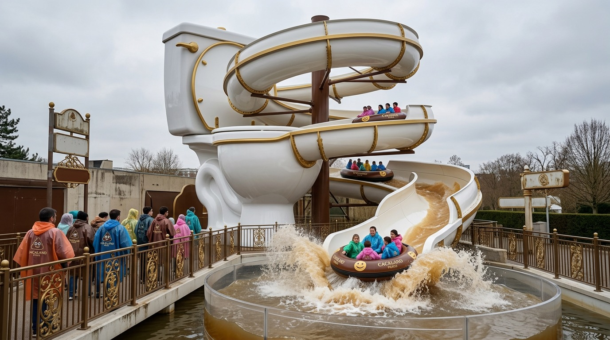

Ouverte
La Grande Chasse d'Eau
Notre attraction aquatique emblématique : embarquez dans une bouée géante et laissez-vous aspirer dans un tourbillon de 30 mètres. Éclaboussures garanties, séchage non fourni.